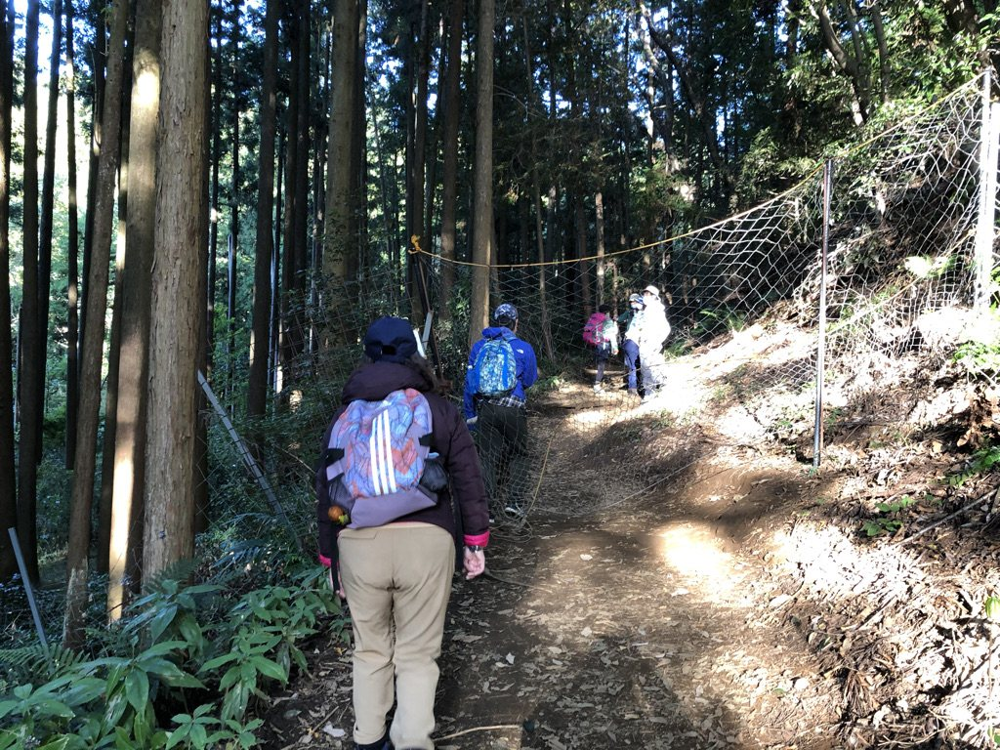
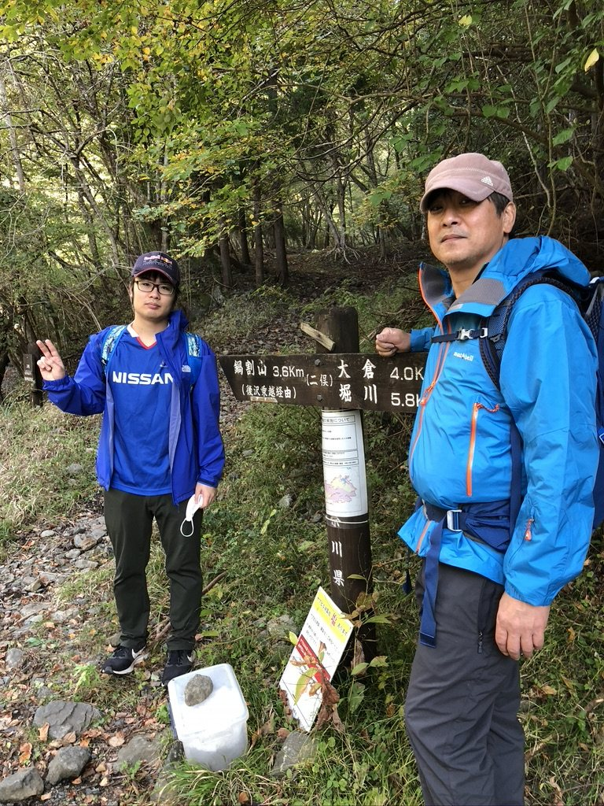
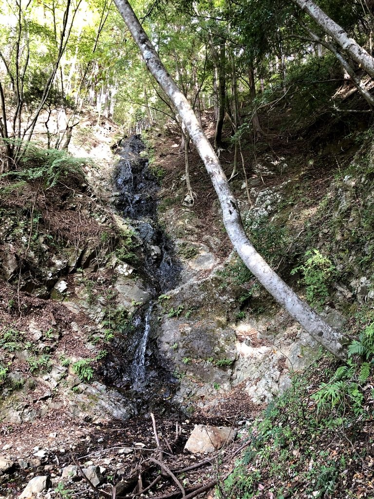
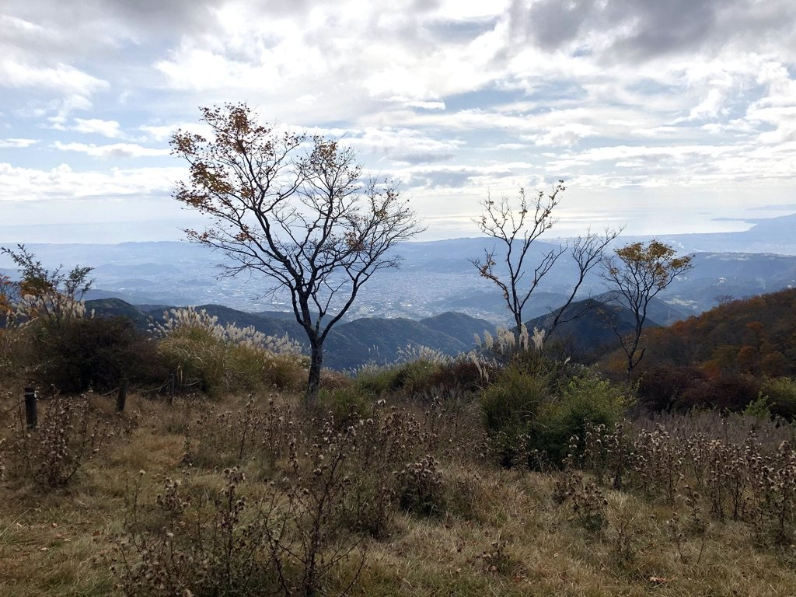
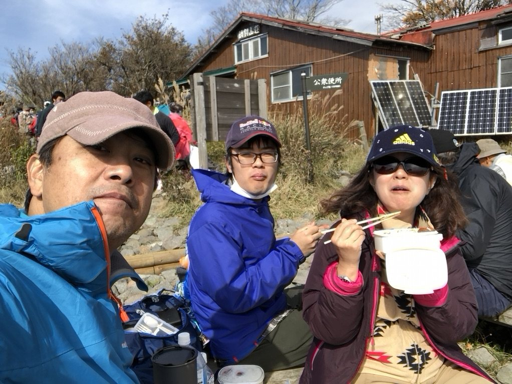
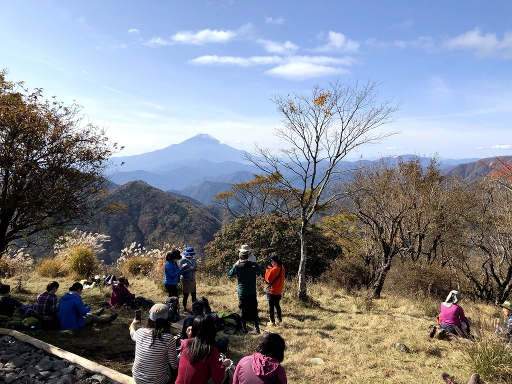
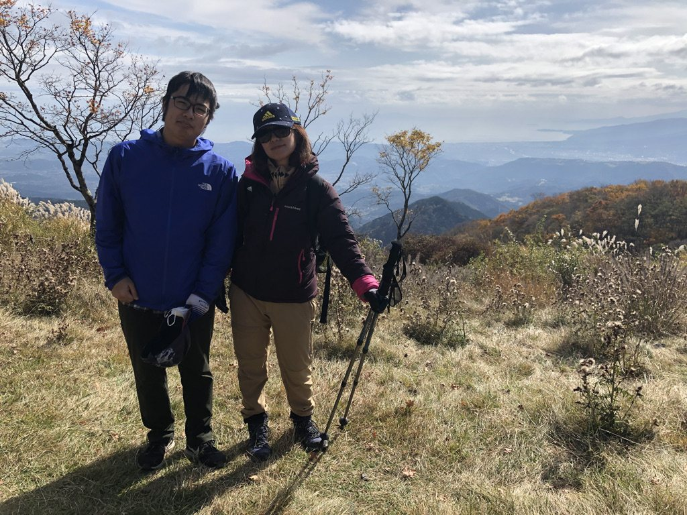
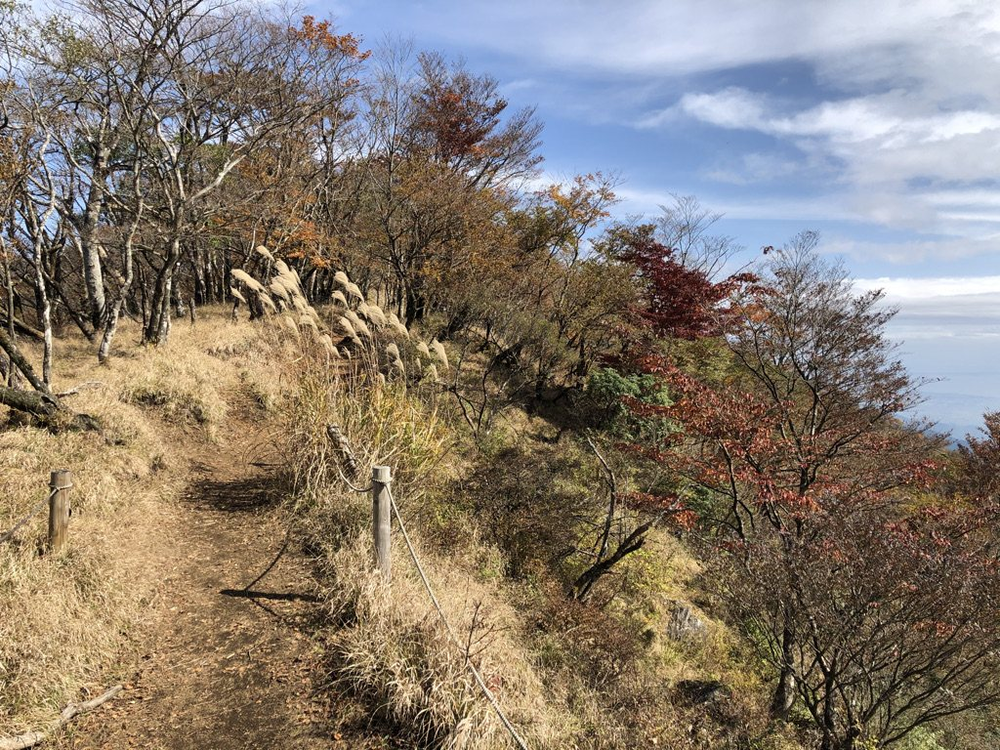
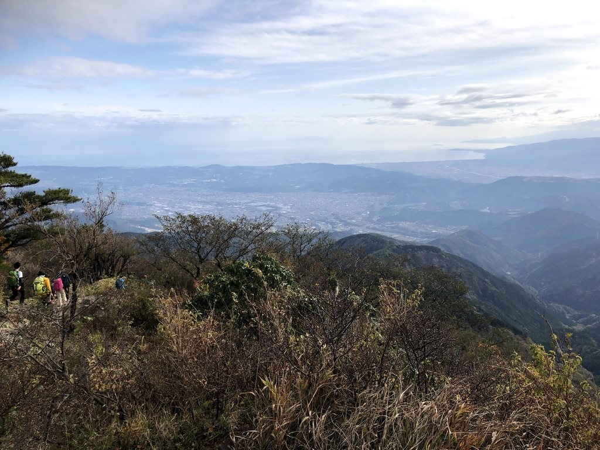

鍋割山の、鍋焼きうどん
丹沢 大倉 → 二俣 → 鍋割山
十一月最初の日曜日、まだ朝の冷たさが残るうちに大倉を出た。妻と、それから息子も一緒だった。二俣の分岐で道標の前に並び、沢沿いの道を後沢乗越へ。そこから先は、ひたすら登りが続く。
鍋割山の山頂には小さな山小屋があって、名物の鍋焼きうどんを出してくれる。標高千二百七十メートルの山の上で、湯気の立つうどんをすする。それだけのために登ってくる人がいるのも、よく分かる。山頂の広場の向こうには富士山がいた。
帰りは秋色に染まりかけた尾根を下った。遠くに相模湾が光っていた。三人で同じ山に登るのは、たぶん簡単なことではない。だからこの日の写真は、少しだけ大事にしておこうと思う。








